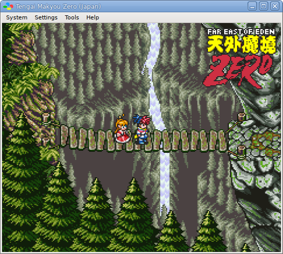

bsnes
bsnes is a Super Nintendo emulator with 100% compatibility, focusing on features and ease of use.

Links
Software Downloads
GPLv3 Source Code
Discussion Forum
Discord Chat
Unique Features
- True Super Game Boy emulation (using the SameBoy core by Lior Halphon)
- HD mode 7 graphics (by DerKoun) with optional supersampling
- Low-level emulation of all SNES coprocessors
- Multi-threaded PPU graphics renderer
- Speed mode settings which retain smooth audio output
- Built-in games database with over 1,200 game entries
- Built-in cheat code database (by mightymo) with hundreds of game entries
- Built-in save state manager with screenshot previews and naming capabilities
- Customizable game mappings to support any game cartridges, including prototypes
- 7-zip decompression support
- Extensive Satellaview emulation, including BS Memory flash write and wear-leveling support
- Optional higan game folder support (standard game ROM files are also supported!)
- Advanced mapping system allowing multiple bindings to every emulated input
Standard Features
- MSU1 support
- BPS and IPS soft-patching support
- Save states with undo and redo support (for reverting accidental saves and loads)
- OpenGL multi-pass pixel shaders
- Several built-in software filters, including HQ2x (by MaxSt) and snes_ntsc (by blargg)
- Adaptive sync and dynamic rate control for perfect audio/video synchronization
- Just-in-time input polling for minimal input latency
- Run-ahead support for removing internal game engine input latency
- Support for Direct3D exclusive mode video
- Support for WASAPI and ASIO exclusive mode audio
- Periodic auto-saving of game saves
- Auto-saves of states when unloading games, and auto-resuming when reloading games
- Sprite limit disable support
- Cubic audio interpolation support
- Deinterlacing support
- Optional high-level emulation of most SNES coprocessors
- Optional emulation of flaws in older emulators for compatibility with older, unofficial software
- CPU, SA1, and SuperFX overclocking support
- Frame advance support
- Cheat code search support
- Movie recording and playback support
- Rewind support
- HiDPI monitor support
- Multi-monitor support
- Turbo support for controller inputs